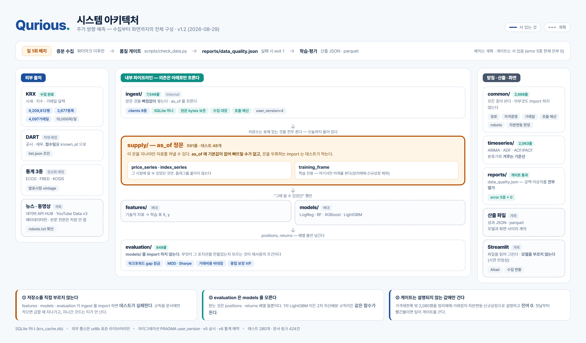
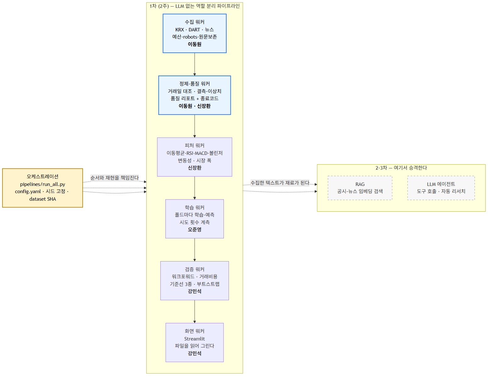

| 구분 | 내용 | 비고 |
|---|---|---|
| 팀명 | Qurious (큐리어스) | Quant + Curious |
| 팀원(역할) | 이동원(팀장) – 데이터 수집·정제·전처리·크롤링 / 문서·일정 관리 오준영 – AI 모델 개발 및 학습 강민석 – 백테스팅, 성과지표, 대시보드 제작 신장환 – 피처 엔지니어링·기술적 지표·데이터 품질 (크롤링 분담) | 주담당일 뿐 교차 검수 (부록 B) |
| 기간 | 2026.09.01 ~ 2026.09.15 (발표장소 : koreaIT노원 B강의실) | 6주 3개 중 1차 |
| 프로젝트 명 | Qurious (큐리어스) — 팀명과 같다. 신호·검증·화면을 층으로 쌓는 1차 프로젝트 ※ 저장소 이름 Alpha_Stack 은 착수 시점(8/24)의 이름이라 그대로 둔다 | 2026-09-03 확정 |
| 주제 선정 이유 | ① 개별 기술적 지표(RSI·MACD·이동평균)를 따로 쓰기보다 머신러닝으로 종합했을 때 예측력이 실제로 향상되는지 검증한다. ② 그런데 주가 예측은 “몇 % 맞혔나”보다 “어떻게 검증했나”가 결론을 좌우한다. 우리 자료로 직접 잰 숫자로 말하면 — 개발구간 3,553거래일에서 아무 모델 없이 “늘 중립”이라고만 답해도 38.50%를 맞힌다(중립이 최빈 클래스다). 통계적으로 유의하려면 41.11%가 필요하다 — 단측 α=0.05 에, 5거래일 레이블이 서로 겹쳐 관측이 독립이 아닌 것을 VIF 3.78 로 반영한 값이다. 이길 수 있는 폭이 2.6%p 남짓이라는 뜻이다. 중립을 빼고 방향만 보면 잣대가 달라진다 — 2,185시점에서 상승 비율이 54.60%이고 유의 임계는 58.01%다. 어느 잣대로 보든 여유가 3%p 아래이고, 국내외 문헌이 보고하는 현실적 상한도 그 언저리다. 그 좁은 폭은 실수 한 줄로 사라진다. 레이블을 시가(t)→시가(t+5)로 하루 어긋나게 정렬해 봤더니 상관이 정확히 10.0배로 부풀었다(+0.1709 대 +0.0171). 에러는 나지 않는다. 그래서 예측 모델과 성과 검증 엔진을 같은 비중으로 만든다. ③ 6주 3개 프로젝트가 모두 “개발 및 성과 검증”으로 끝난다. 매 차수 새로 만드는 것은 앞쪽이고 검증하는 방법은 같다. 1차를 세 프로젝트가 공유할 바닥층으로 설계한다. | 숫자는 모두 실측 |
| 프로젝트 목표 | ① 룩어헤드 없는 성과 검증 엔진 — 워크포워드 gap 잠금·거래비용·기준선 3종·사전등록 ② 지수 트랙 — KOSPI200 의 5거래일 뒤 등락을 상승/보합/하락 3분류로 예측 ③ 종목 트랙 — 예측이 통하는 종목을 먼저 선별하고, 그 안에서 랭킹을 매긴다 ④ 요일별 5트랙 중첩 운용 — 같은 모델을 매 거래일 돌려 진입 시점을 분산한다 ⑤ 유동 임계값 — 상승/보합/하락 경계를 고정하지 않고 변동성에 맞춰 조정한다 ⑥ 신호→포지션 규칙 — 보유/무보유 × 상승/보합/하락 행동과 시드 배분을 정한다 ⑦ 모델 4종 동일 조건 비교 — LogisticRegression·RandomForest·XGBoost·LightGBM ⑧ 단일 명령 재현 + Streamlit 시연 화면 | ④⑤⑥ 팀원 제안 세부는 부록 A |
| 분석 방법 | ① 수집 — KRX OpenAPI 로 2010년부터 16년 전수. 상장폐지 910종목을 포함해 생존편향을 막되, 그 종목의 정리매매 구간(마지막 10거래일)은 제외한다. 그 구간은 가격제한폭이 없어 -90% 봉이 찍히는데 실제로는 체결되지 않는다 ② 시점 정합 — T일 종가로 판단, T+1 시가에 체결, T+6 시가에 평가. 미래 자료 접근을 코드가 차단한다 ③ 품질 게이트 — 거래일 캘린더 대조·결측·이상치 리포트. 기준 미달이면 파이프라인이 멈춘다 ④ 피처 — 이동평균·RSI·MACD·볼린저·거래량 파생·변동성을 numpy 로 직접 구현하고 지표마다 손계산 테스트를 붙인다 ⑤ 레이블 — 3분류. 밴드는 실측으로 정했다(지수 ±1.0% / 종목 ±2.0%) ⑥ 종목 선별 — 예측가능성 통계로 1차 선별. 선별은 개발구간에서만 하고 검증구간에서 고정한다 ⑦ 모델 — 4종을 같은 자료·같은 분할·같은 시드로 비교하고, 시도 횟수를 장부에 기록한다 ⑧ 검증 — 워크포워드(gap=5·12폴드)·기준선 3종·ARIMA 동반·거래비용 4수준 ⑨ 통계 검정 — 수업에서 배운 기법으로(ADF·Ljung-Box·카이제곱·대응표본 t·ANOVA+Tukey), 주 검정은 부트스트랩 단측 p<0.05 | 세부는 부록 A |
| 예상 산출물 | ① Streamlit 시연 화면 — 신호·성과·수집 현황을 한 화면에서 (발표 시연) ② 모델 성능 비교표 — 4종 × 기준선 3종, 거래비용 반영 전후 ③ 재현 파이프라인 — 명령 하나로 수집부터 성과까지. 품질 리포트 포함 ④ 발표자료·README·주요 결정 기록(ADR) ⑤ 2·3차가 그대로 가져다 쓰는 성과 검증 엔진 | ①② 가 발표 시연 |
부록
필수 범위는 2주 안에 반드시 끝낸다. 선택 범위는 9/8 중간 점검에서 한 번만 결정하고, 그 뒤로는 늘리지 않는다. ⑭~⑯ 은 v3.0 에서 더한 데이터 파트 고도화(설계 완료 · 구현은 합의 후)다.
| 구분 | 범위 | 담당 | 판단 근거 |
|---|---|---|---|
| 필수 | ① 성과 검증 엔진 (워크포워드·거래비용·기준선 3종) | 강민석 | 이 프로젝트의 논지 자체 |
| 필수 | ② 지수 트랙 — KOSPI200 3분류 | 오준영 | 기준선·유의임계를 이미 실측 |
| 필수 | ③ 종목 트랙 — 선별 후 랭킹 | 오준영·신장환 | 수익 크기가 지수의 2.6배. 다만 거래세로 손익분기는 더 높다 |
| 필수 | ④ 요일별 5트랙 중첩 운용 | 강민석 | 팀원 제안 · 진입 시점 분산 |
| 필수 | ⑤ 유동 임계값 (변동성 스케일) | 신장환 | 팀원 제안 · 고정 밴드와 병행 |
| 필수 | ⑥ 신호→포지션 규칙과 시드 배분 | 신장환·강민석 | 팀원 제안 · 조합을 사전 고정 |
| 필수 | ⑦ 모델 4종 동일 조건 비교 | 오준영 | 수업에서 배운 sklearn 전 영역 |
| 필수 | ⑧ 수집·품질 게이트·공급 계층 | 이동원 | 이미 920만 행 적재 완료 |
| 필수 | ⑨ Streamlit 시연 화면 | 강민석 | 발표 시연 |
| 선택 | ⑩ 시장 균열 스코어 (변동성 예측용) | 신장환 | 방향 예측 증분은 실측상 0에 가까웠다 |
| 선택 | ⑪ 공시 제목 텍스트 신호 — HF 인코더 원격 추론 | 이동원 | 뉴스는 약관 미결(부록 G ④) · 공시는 제한 없음 후보 21종 실측 → 6종 (데이터파트 v3.2) |
| 선택 | ⑫ Keras LSTM/GRU 비교 | 오준영 | 수업 진도가 9월 중 여기까지 나간다 |
| 선택 | ⑬ 표에 없는 기능 | 제안자 | 주제 안에 있고 설명할 수 있으면 넣는다 |
| 선택 | ⑭ 버튼 갱신 파이프라인 — 수집→게이트→판정→HF 한 명령 · 잠금 | 이동원·강민석 | 판정이 '재배포 필요' 일 때만 HF 버튼 배선은 화면 파트 |
| 2·3차 계약 | ⑮ 비LLM 에이전트 관측 규격 (W×F 배열 · 명세만) | 이동원 | supply 정문 재사용 → 2·3차에 데이터 코드 무수정 |
| 선택 | ⑯ GitHub Actions 검사용 CI (봇 커밋 없음) | 이동원 (팀 합의 후) | 계정 제한 리서치 act 로컬 검증 뒤 도입 |
아래 담당은 “무엇을 했는지 말할 수 있게” 나눈 것이지 벽을 세운 것이 아니다. 각자 자기 영역을 끌고 가되 옆 담당의 산출물을 한 번 더 확인한다.
| 영역 | 주담당 | 교차 검수 | 산출물 |
|---|---|---|---|
| 데이터 수집·정제·전처리·크롤링 | 이동원 | 신장환 | 적재 파이프라인·품질 리포트·공급 계층 |
| 피처 엔지니어링·기술적 지표·품질 | 신장환 | 오준영 | 지표 모듈·손계산 테스트·선별 통계 |
| AI 모델 개발·학습 | 오준영 | 강민석 | 모델 4종·성능 비교표 |
| 백테스팅·성과지표·대시보드 | 강민석 | 이동원 | 검증 엔진·Streamlit 화면 |
① 모든 코드는 Pull Request 로 병합하고 교차 검수자 1인의 승인을 받는다.
② 자신이 만든 기능은 팀 회의에서 5분 안에 설명할 수 있어야 한다. 설명하지 못하는 코드는 병합하지 않는다 — 도구를 쓰는 것은 자유이나 결과를 아는 것은 책임이다.
③ 매일 진행 상황을 짧게 공유한다. 막히면 하루를 넘기지 않고 말한다.
④ 주요 결정은 한 장짜리 기록으로 남긴다 — 무엇을, 왜, 어떤 대안을 버렸는지.
⑤ 발표는 신장환·강민석이 함께 한다 (2026-09-03 확정).
이 계획서가 쓰는 말 중 뜻이 한 줄로 안 잡히는 것을 모았다. v4.0 에서 신설했다 — 팀원이 “ARIMA 동반·폴드 커버리지·시도 횟수 계측이 무엇을 하라는 말인지 모르겠다”고 물었고, 다시 보니 본문에 이름만 있고 뜻이 없었다. 이름을 아는 것과 무엇을 만들면 끝인지 아는 것은 다르다.
표의 마지막 열이 “무엇을 만들면 끝인가”다. 그 칸을 채울 수 없는 말은 계획이 아니라 분위기다.
| 말 | 무엇인가 (한 줄) | 왜 필요한가 | 무엇을 만들면 끝인가 |
|---|---|---|---|
| 워크포워드 (walk-forward) | 시간을 앞으로 밀며 [학습 | 간격 | 검증] 을 반복하는 검증 방식 | 주가는 시간 순서가 있다. 무작위로 섞어 나누면 미래로 과거를 맞히게 된다 | 폴드마다 (학습 인덱스, 검증 인덱스) 쌍. evaluation/walk_forward.py 의 expanding_splits 가 준다 |
| gap 잠금 | 학습 끝과 검증 시작 사이에, 레이블이 앞을 보는 만큼(5일) 버리는 것 | 5거래일 레이블은 t 행이 t+5 가격을 알아야 만들어진다. 붙여 두면 학습이 검증 답을 미리 본다 — 에러는 안 나고 성능만 오른다 | 기본값이 gap=horizon 이다. gap=0 은 LeakageError 를 던지고 allow_leakage=True 일 때만 통과한다 (F-09) |
| 폴드 커버리지 | 워크포워드 검증 창이 개발 구간의 몇 %를 덮었나 | 검증 창 사이에 학습과 gap 이 차지한 틈이 생긴다. 낮은데 안 적으면 “개발 구간에서 검증했다”가 실제보다 크게 들린다 | 리포트 한 줄. 실측 20.3% — 3,553시점 중 고유 720 (12폴드 · 검증창 60일 · gap 5 · 중복 0) |
| 기준선 3종 (baseline) | 우리 모델이 이겨야 할 상대 셋 — always_up · majority_class · previous_direction | “정확도 62%”는 그 자체로 아무 말이 아니다. 상승이 62%인 구간에서는 늘 상승이라 답하기만 해도 62%가 나온다 | 성능표에 기준선 열을 함께 인쇄한다. 빼고 렌더러를 부르면 예외 (F-14). 🔴 파라미터가 없어 튜닝 대상이 아니다 |
| 유동 임계값 (동적 기준선) | 상승/중립/하락을 가르는 경계를 변동성·거래량에 맞춰 움직이는 것 | 고정 밴드(±1.0%)는 조용한 장과 요동치는 장을 같은 자로 잰다 | features/dynamic_threshold.py · evaluation/threshold_tuning/. 🔴 파라미터가 6개라 튜닝 대상이고, 그래서 시도 횟수 계측이 걸린다 |
| ARIMA 동반 | 고전 시계열 모형(ARIMA)의 방향 적중률을 같은 표에 함께 싣는 것 | 기준선 3종은 “머리를 안 쓰는” 상대다. 그걸 이겨도 “원래 쓰던 방법보다 나은가”에는 답이 안 된다 | 비교표에 ARIMA 행 하나. 코드는 timeseries/models.py 에 이미 있다 (fit_arima · fit_best · random_walk). 폴드마다 다시 적합하고, 예측값을 같은 중립 밴드로 잘라 라벨로 바꾼다 |
| 시도 횟수 계측 | 모델·피처·파라미터를 몇 번 바꿔 가며 시험했는지 세어 파일에 남기는 것 | 동전 100개를 10번씩 던지면 하나는 8번 앞면이 나온다. 몇 번 던졌는지 안 적으면 그 동전이 좋아 보인다 | reports/trials.jsonl — 한 줄 = 한 번의 fit. 🔴 실패한 시험도 적는다. 행 수 == fit 호출 수 (F-13) |
| E[max] (우연 기대 최고) | 실력이 0이어도 N번 시험하면 최고 성적이 이 정도는 나온다는 값 | 시도 횟수 N 이 있어야 계산된다. 우리 성적이 이 값을 못 넘으면 우연과 구별되지 않는다 | 결론 문장의 빈칸이다 — “시도 {n_trials}회, 우연 기대 최고 정확도 {expected_max_acc}%”. 못 채우면 결론이 안 나온다 |
| 사전등록 (preregistration) | 가설·주 지표·기각 임계·결론 문장을 데이터를 보기 전에 못 박는 것 | 숫자를 본 뒤 쓴 가설은 가설이 아니라 관찰의 재진술이다 (HARKing) | ADR-AS-0004. 그 파일의 커밋 시각이 unseal.log 첫 행보다 앞서야 한다 (F-05) |
| 봉인 홀드아웃 · 개봉 1회 | 2024-09-01 이후 구간을 한 번도 안 보고 두었다가 마지막에 딱 한 번 여는 것 | 성능을 보고 설계를 고치면 그 성능은 더 이상 예측이 아니다 | reports/unseal.log 행 수 == 1. 2가 되는 순간 “확증 불가”로 보고한다 (F-16) |
| 룩어헤드 편향 | 그 시점에 알 수 없었던 정보가 모델에 들어가는 것 | 에러가 안 난다. 성능만 오르고 실전에서 사라진다 | 자료는 반드시 supply 계층을 지난다. 문이 둘이고 이름으로 갈랐다 — 예측 경로와 학습 경로 |
| 중첩 레이블 · VIF | 매일 5거래일 레이블을 만들면 이웃한 날이 구간의 4/5 를 공유한다 | 관측이 서로 독립이 아니라 유의 임계가 너무 낮게 나온다 (실측 VIF 3.78) | significance_threshold_overlapping 을 쓴다. 3분류 기준 41.11% — iid 로 계산하면 39.85% 라 1.3%p 느슨하다 |
| hit_rate 의 함정 | 방향 적중률이 “실제가 중립”인 시점을 분모에서 뺀다 | 개발구간은 중립이 38.50% 로 최빈이다. 그 38.50% 를 빼고 재면 무엇을 재고 있는지가 달라진다 | 정확도를 스칼라로 돌려주는 공개 함수를 두지 않는다 — (값, Wilson CI, 표본수, PT p) 묶음으로만 (F-10) |
| 거래비용 4수준 · 손익분기 | 왕복 비용을 네 가지로 놓고 성과가 어디서 뒤집히는지 보는 것 | 비용을 빼면 대부분의 전략이 이기고, 빼지 않으면 대부분 진다. 어느 쪽도 그냥은 못 믿는다 | reports/cost_sensitivity.csv 4행 + 손익분기 왕복비용 한 숫자 (F-11) |
※ 기준선 3종과 유동 임계값은 이름이 닮았지만 서로 다른 것이다. 기준선 3종은 파라미터가 없어 튜닝할 수 없고(우리가 이겨야 할 상대다), 유동 임계값은 파라미터가 여섯이라 튜닝 대상이며 그래서 시도 횟수 계측이 걸린다. 둘을 섞으면 “기준선을 튜닝했다”는 말이 나오는데, 그런 것은 없다.
※ 폴드 커버리지는 2026-09-05 에 실측했다 — 개발구간 3,553시점 중 검증에 쓰인 고유 시점이 720개로 20.3%다. 2026-08-26 손계산 약 19%와 맞는다. 나머지 79.7%는 학습과 gap 이 차지해 한 번도 검증되지 않는다. 검증창을 60일에서 5일로 줄이면 커버리지가 1.7%까지 떨어진다 — 커버리지를 좌우하는 것은 폴드 수가 아니라 검증창 길이다.
※ 기준선 previous_direction 은 워크포워드에서 84.08%가 나오는데 실력이 아니라 레이블 겹침 때문이다. 5거래일 레이블이라 이웃한 날이 구간의 4/5를 공유한다(1일 전과 같은 레이블 66.55% · 5일 전과는 33.23%). 게다가 검증 직전의 실제 레이블을 쓰는데 그 값은 5일 뒤에야 확정된다 — 실전에서는 알 수 없는 정보다. 표에서 빼지 않고 각주로 밝힌다. 왜 높은지 설명하는 편이 발표에서 강하다.
착수 시점(8/25 이관)의 자산과 2026-09-03 실측을 나란히 적는다. 비어 있던 피처·모델은 팀원이 채웠고, 파이프라인은 수집만 서 있다. 남은 빈 곳은 갱신 파이프라인·API 다.
| 계층 | 줄 수 (8/25 → 9/3) | 상태 (2026-09-03) |
|---|---|---|
| ingest/ — 수집·반입·적재 | 7,488 → 13,283 | 동작 중. 시세 9,223,644행 · 재무 662,933행 · 거시 17,851행 수정주가 v9 · 종목 신원 v10 (코드↔법인등록번호↔ISIN) |
| evaluation/ — 성과 검증 | 772 → 3,240 | 동작 중. 강민석 지표 2편 합류 |
| supply/ — 시점정합 공급 | 228 → 961 | 동작 중. 문 둘(예측·학습) · 홀드아웃 2년 |
| common/ — 설정·예산·robots·달력 | 2,348 → 3,267 | 동작 중. 거래일 달력 12,306행 · 반출 프로파일 |
| timeseries/ — ARIMA·ADF·ACF | 2,063 → 2,085 | 코드는 있으나 아직 호출처가 없다 |
| scripts/ — 실행 CLI | 2,523 → 9,550 | 동작 중 (수집·품질·반출·HF·키 점검·신원검증 35종) |
| tests/ | 3,017 → 10,724 | 924 passed · 3 xfailed · 259초 |
| features/ — 피처 | 35 → 1,175 | 지표 22칸 (신장환) |
| models/ — 모델 | 34 → 875 | 4종 팩토리 (오준영) |
| pipelines/ — 오케스트레이션 | 0 → 305 | ingest 구현 · refresh 는 설계(v3.2) |
| api/ — 최소 API | 0 → 28 | 빈 껍데기 — 강사님 FastAPI 골격으로 ⑩ |
설치·확인 완료 — scikit-learn 1.9.0 · LightGBM 4.7.0 · XGBoost 3.4.1 · scipy 1.18.1 · pandas 3.0.5 · numpy 2.5.1 · huggingface_hub 1.29.0 · nbclient 0.11.0 (실측 2026-09-03)
화면 스택은 Streamlit 으로 합의(킥오프) — 설치·버전은 화면 담당(강민석)이 정한다.
아래는 모두 우리 자료로 직접 잰 값이다. 인용이 아니다. 재현: python scripts/measure_horizon.py · measure_stock_horizon.py
| 무엇 | 값 | 구간 | 왜 중요한가 |
|---|---|---|---|
| 데이터 규모 | 9,223,644행 · 3,677종목 4,102거래일 (2026-09-03) | 2010-01-04 ~ 2026-09-01 | 16년 전수. 부분 표본이 아니다 |
| 중도 소멸 종목 | 910종목 | 전 구간 | 상장폐지가 자료에 남아 있다 → 생존편향 방어 |
| 정리매매 급락 | -30.5% 이하 1,224행 중 1,197행(97.8%)이 정리매매 | 전 구간 | 폐지 종목을 넣었더니 반대 편향이 생겼다. 마지막 10거래일을 뺀다. 최저 -98.41% |
| 기준선 3분류 (늘 중립) | 38.50% | 개발구간 3,553일 | 최빈 클래스가 중립이다. 모델이 이겨야 할 하한 (하락 27.92 / 중립 38.50 / 상승 33.58) |
| 유의 임계 3분류 | 41.11% | 개발구간 3,553일 | 단측 α=0.05 · 레이블 중첩을 VIF 3.78 로 반영 (독립 가정이면 39.85% — 1.3%p 느슨하다) |
| 기준선 방향만 (중립 제외) | 54.60% | 2,185시점 | 중립을 분모에서 빼면 잣대가 달라진다 |
| 유의 임계 방향만 | 58.01% | 2,185시점 | 같은 VIF 3.78 반영 (독립 가정이면 56.35%) |
| 폴드 커버리지 | 20.3% | 3,553시점 중 720 | 12폴드 · 검증창 60일 · gap 5 · 폴드 간 중복 0 나머지 79.7%는 학습과 gap 이 차지한다 |
| 지수 E|5일수익| | 1.753% | 개발구간 | 손익분기 계산의 분모 |
| 종목 E|5일수익| | 4.483% (KOSPI) 5.159% (전 시장) | 개발구간 | 지수의 2.6~2.9배 |
| 지수 손익분기 (ETF) | 51.43% (왕복 0.05%) 52.85% (왕복 0.10%) | 개발구간 | 국내 상장 ETF 는 매도 시 증권거래세 면제 |
| 종목 손익분기 (개별주) | 53.12% (왕복 0.28%) 54.80% (왕복 0.43%) | 개발구간 | 매도 시 0.20%(거래세 0.05+농특세 0.15) + 수수료·스프레드 |
| 지수 3분류 ±1.0% | 34.03 / 38.66 / 27.31 | 개발구간 | 세 클래스가 15~45% 안 |
| 종목 3분류 ±2.0% | 30.12 / 37.90 / 31.98 | 개발구간 KOSPI | ±1.0% 면 중립이 20.7% 로 얇아진다 |
| 레이블 오정렬 시 | 상관이 정확히 10.0배 (+0.1709 대 +0.0171) | 개발구간 | 하루 어긋나면 이렇게 된다. 에러는 안 난다 |
※ 손익분기는 “방향 적중 여부와 수익 크기가 서로 무관하다”는 가정 위에 있다. 큰 변동일이 예측하기 더 어렵다면 실제로 필요한 정확도는 더 높다.
※ 처음에는 두 트랙에 같은 비용을 적용해 “종목이 지수보다 유리”하다는 결론을 냈다. 국내 상장 ETF 는 증권거래세가 면제되고 개별주는 매도 시 0.20%를 낸다는 비대칭을 반영하니 부호가 뒤집혔다. 종목 트랙은 수익 크기가 2.6배 크지만 그 이점을 거래세가 상쇄하고 남는다 — 지수보다 약 1.7%p 불리하다. 그래도 방향 기준 유의 임계(58.01%) 언저리라 불가능하지는 않다.
※ v4.0 — 기준선을 다시 쟀다. v3.0 이 실었던 52.64%·54.99%는 v2.0 시점(5년 홀드아웃)의 “일간 상승 비율”이라 우리 과제(5거래일 3분류)와 단위가 달랐다(이슈 #33·#37). 지금 배포본(개발구간 ~2024-08-31 · 3,553거래일)으로 재면 3분류 최빈 기준선이 38.50%(중립), 중첩을 VIF 3.78로 반영한 유의 임계가 41.11%다. 방향만 보면 상승 비율 54.60%(2,185시점) · 유의 임계 58.01%다. 본표 “주제 선정 이유”와 함께 교체했다. 계획서가 스스로 “다음 판에서 고친다”고 적어 둔 것을 이 판에서 닫았다.
※ 재현 — 쓰는 함수는 evaluation/baseline.py 의 evaluate_all, evaluation/horizon.py 의 significance_threshold_overlapping, evaluation/walk_forward.py 의 expanding_splits 다. 전부 정본 함수이고 손으로 계산한 값이 아니다. 라벨 분포는 하락 27.92% · 중립 38.50% · 상승 33.58% 다.
2026년 8월 Artificial Intelligence Review 에 실린 QFRS 는 AI 기반 금융 예측·트레이딩 연구가 지켜야 할 7개 보고 표준이다. 저자가 Scopus 색인 논문 41편을 감사했더니 7개를 모두 충족한 논문이 한 편도 없었다(평균 4.22개). 특히 경제적 백테스트는 87.8%가, 인과적 스케일링은 68.3%가 실패했다.
이 프로젝트의 논지가 “어떻게 검증했나”이므로 그 기준을 그대로 가져와 우리 현황을 표로 놓는다. 지금 5개 충족·2개 부분이고, 부분 2개는 2주 안에 닫는다.
| 기준 | 논문이 요구하는 것 | 우리 현황 | 근거 |
|---|---|---|---|
| QFRS-1 Dataset specification and data handling | 출처·버전·기간 명시. 주식이면 상장폐지 종목 포함 여부와 처리 방법을 밝혀 생존편향을 통제할 것 | 충족 | KRX OpenAPI · 2010-01-04~2026-08-25 · 920만 행 중도 소멸 910종목 포함 |
| QFRS-2 Labeling (ground truth construction) | 레이블 정의와 임계값을 명시. 아주 작은 등락을 맞히는 이진분류는 통계적으로만 맞고 경제적으로 무의미하다고 지적 | 충족 | 시가(t+1)→시가(t+6) 3분류 밴드를 실측으로 정함 (지수 ±1.0% / 종목 ±2.0%) |
| QFRS-3 feature engineering (anti-leakage by design) | 피처가 미래를 보지 않도록 설계 단계에서 차단할 것 | 충족 | as_of 공급 계층. 기본값이 없어 빠뜨릴 수 없고 경계를 테스트 16개가 막는다 |
| QFRS-4 Scaling / Normalisation | 스케일링을 전체 자료에 먼저 적용하면 누수. 학습구간에서 fit 하고 검증·테스트에 transform 만 할 것 | 미착수 | 피처 계층이 아직 비어 있다. 9/2~9/5 에 구현하며 지킨다 |
| QFRS-5 Train/Validation/Test split | 레이블이 h 기간 앞을 보면 창 사이에 최소 h 만큼 embargo | 충족 | 워크포워드가 gap=label_horizon 을 강제. 어기면 LeakageError 로 멈춘다 |
| QFRS-6 evaluation metrics and task types | 주 지표로 MCC·PR-AUC·Balanced Accuracy·혼동행렬. F1·ROC-AUC 는 보조 | 부분 | 기준선 3종 대비 보고는 있으나 MCC 는 아직 없다 — 9/10 까지 추가 |
| QFRS-7 Backtest metrics (economic performance) | 수수료·슬리피지·체결 규칙을 밝힌 경제적 백테스트. 필수(M) 항목이 하나라도 없으면 Fail | 부분 | 거래비용 4수준은 있다. 회전율·체결 가정 문서화는 9/11 까지 |
출처: Khushi M. QFRS: quantitative finance reporting standards for forecasting, evaluation and trading claims. Artif Intell Rev (2026). https://doi.org/10.1007/s10462-026-11664-w
※ 이 논문은 온라인 선공개(accepted manuscript) 상태라 권·호·페이지가 아직 없다. 위 형식이 원문이 지정한 인용 방식이다. Open Access(CC-BY)라 전문을 볼 수 있다.
프로젝트명(Qurious)과 발표자(신장환·강민석 공동)는 2026-09-03 에 닫혀 본표와 부록 B 로 올라갔다. 남은 것은 넷이다.
① 산업 분류 기준 — KRX 업종 / GICS / 직접 매핑 (수업 자료에 KRX 업종분류·WICS 수집 코드가 이미 있다)
② 뉴스 제목·요약을 로컬 DB 에 저장해도 되는가 — 네이버 약관이 “저장(캐시 포함)”을 금지한다. 법적 판단이라 팀에서 함께 결정한다. 데이터 파트는 그동안 공시 제목(제한 없음)으로 텍스트 신호를 만든다
③ 동영상 수집 대상 채널 목록
④ 방향정확도에 합격선을 걸 것인가 — v4.0 에서 값을 다시 쟀다. 3분류로는 기준선 38.50% · 유의 임계 41.11%, 중립을 뺀 방향만으로는 54.60% · 58.01% 다(둘 다 레이블 중첩을 VIF 3.78 로 반영). 사전등록 ADR 은 방향정확도에 애초에 합격선을 걸지 않았고(보조 지표다), 계획서만 합격선처럼 읽히게 적어 두었던 것이 어긋남의 원인이었다. 두 잣대 중 무엇을 발표에 쓸지만 정하면 된다
세 차수의 주제가 모두 “개발 및 성과 검증”으로 끝난다. 매번 새로 만드는 것은 앞쪽이고 검증하는 방법은 같다. 1차에서 검증 엔진을 재사용 가능하게 분리하는 것이 6주 전체의 효율을 좌우한다. v3.0 에서 “데이터 계층 계약” 열을 더했다 — 2·3차의 에이전트·텍스트가 데이터 코드를 고치지 않고 붙는 자리다.
| 차수 | 무엇을 새로 만드나 | 1차에서 그대로 가져가는 것 | 데이터 계층 계약 (v3.0) |
|---|---|---|---|
| 1차 9/1~9/15 | 지표 기반 등락 예측 + 성과 검증 엔진 | — | supply 정문 · HF 반출 · 갱신 파이프라인 · 텍스트 신호(공시 제목) |
| 2차 | 한 종목 신호를 여러 종목 배분으로 넓힌다 (비LLM 에이전트 · 강화학습 후보) | 검증 엔진·수집 계층·시점정합 규칙 | 관측 배열 규격 (W×F) — 환경이 그대로 읽는다 · 뉴스(약관 판단 후) |
| 3차 | 기성 지표(RSI·MACD) 자리를 우리가 만든 지표로 바꾼다 | 검증 엔진·피처 계약·실험 기록 규약 | 텍스트 신호 확장(본문) · 대안데이터 팩터 게이트(GitHub 활동) |
자료는 반드시 시점정합 공급 계층을 지나야 한다. 이 문을 지나지 않는 조회는 테스트가 막는다. “그때 알 수 있었던 것”만 모델에 들어가게 하는 구조적 장치다.
문은 둘이다. 예측 경로는 as_of 시점에 알 수 있었던 행만 주고, 학습 경로는 전 구간을 보고 정리매매·신규상장 구간을 덜어낸다. 정리매매 판정은 “이 뒤로 체결이 끊긴다”라서 그 시점에는 알 수 없는 사실이기 때문이다. 손잡이로 켜고 끄면 언젠가 켜진 채로 예측에 들어가므로 이름으로 갈랐다 — 예측 코드가 학습용 문을 부르면 이름만으로 리뷰에 걸린다.

역할별로 파이프라인을 나눠 4명이 병렬로 작업한다. 1차에는 LLM 을 쓰지 않으므로 역할별 워커와 오케스트레이션이며, RAG·에이전트로의 승격은 2·3차에서 다룬다.
